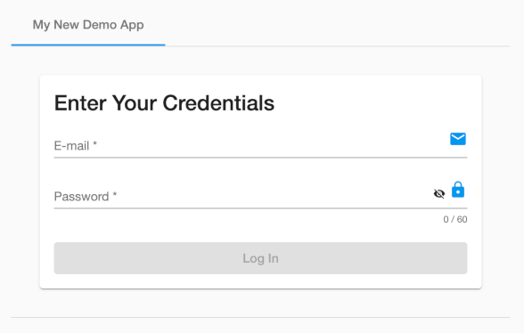

Administration
This section describes administration and operating procedures for the Dashjoin platform.
Configuration Changes
A system is defined by the following configurations: Dashboards, layout pages, user roles, registered databases, and functions. These settings are stored in the configuration database. For the open source version, this data is kept on the file system in the model folder. In the docker container, this folder is located under /deployments/model. For locally installed systems, this folder can be found under USER_HOME/.dashjoin/model.
Configuring OpenID
The Dashjoin platform can be setup to delegate identity management to an OpenID provider such as Google, Microsoft Azure AD, Okta, or Keycloak.
Registering the Dashjoin Application
The first step is to register the Dashjoin application in your OpenID management console. This example explains the process for Azure AD. Note that you will have to have a redirect URL such as "https://dashjoin-app.example.com/login" available.
Configuring the OpenID Provider in Dashjoin
The Dashjoin login page can be configured via a configuration file named /assets/logincfg.json.
The default config is:
{
"signInTabText": "My Dashjoin",
"signInCardTitleText": "Sign In",
"emailText": "E-Mail or Username",
"registerTabText": "New User",
"resetPasswordTabText": "Reset My Password",
"resetPasswordInputText": "Enter your E-Mail. Password reset instructions will be sent",
"emailLoginEnabled": true,
"registrationEnabled": true,
"guestEnabled": false,
"guestLoginEnabled": true,
"providers": "google",
"openIdConfigs": []
}
The information you gathered from registering your application in the previous step can be added in the openIdConfigs array as shown in the following Azure AD example:
{
...
"openIdConfigs": [
{
"domain": "dashjoin.com",
"name": "Dashjoin Example.com",
"logo": "/favicon.ico",
"config": {
"issuer": "https://login.microsoftonline.com/.../v2.0",
"clientId": "...",
"redirectUri": "https://dashjoin-app.example.com/",
"scope": "openid profile email",
"requestAccessToken": false,
"strictDiscoveryDocumentValidation": false
}
}
]
}
This config fields are defined as follows:
- Domain: the domain the application is running on
- Name: Application name in the IDM
- Logo: Absolute or relative URL to the IDM logo to be displayed on teh login screen
- Issuer: URL / UUID of the IDM issuing authorizations
- Client ID: ID of the registered application in the IDM
- Redirect URI: URL of the Dashjoin application Important: previously this required a link to /login, this does not work anymore. Use the root URL
- Scopes: scopes are used by an application during authentication to authorize access to a user's details
- Request Access Token: obtain an Access Token, an ID Token, and optionally a Refresh Token
- Strict Discovery Document Validation: ensure that all of the endpoints provided via the ID Provider discovery document share the same base URL as the issuer parameter
You can configure multiple OpenID providers:

Creating and Assigning Application Roles
- After the application is registered within the IDM and the IDM made known to the application, you need to define the roles an IDM user has within the application. On Azure AD, this is the "App roles" dialog. Note that these roles must match the role names defined in the Dashjoin platform. The IDM must be configured to emit the groups as role claims. On Azure AD, this is done in the "Token configuration" dialog.
Adding the Open ID Config to the Platform
- Option 1:
The login config can be stored in the app as
/assets/logincfg.json
This is the easiest and usually preferred method.
But note that all app developers with write rights can make changes to this file.
As the login config is highly relevant to security, make sure to validate its content and verify who has made changes.
If this is not acceptable, you can also use the next option.
- Option 2:
Alternatively, you can store the file in the installed Dashjoin platform, outside of the app.
The Open ID configuration must be stored as
relative to the current working directory of the platform.Note that the current working directory depends on the OS and the way the platform is installed / started.
The next sections list the locations on different operating systems.
Installed Dashjoin application
-
On Windows, the default location is
-
On Linux and MacOS, store the file relative to the location Dashjoin is launched (current working directory). I.e. if the platform is launched from
/home/dashjoin, store the config at -
On MacOS, you need to launch the application manually from a terminal, otherwise the working directory is
/which does not allow to store the config. The executable of the application is by default located at
Dashjoin container
The current working directory in the container is /deployments.
Use the Docker -v option to mount logincfg.json to /deployments/META-INF/resources/assets/logincfg.json
Command Line Example:
docker run --rm -p 8080:8080 -v /my/path/to/logincfg.json:/deployments/META-INF/resources/assets/logincfg.json:ro dashjoin/platform
- Dashjoin PaaS Cloud
please send an email to request the change.
Minimalistic logincfg.json customization example
The following example disables all OpenID providers, disables password reset, and disables user registration. Also it re-defines the displayed texts.
Note: all settings not specified will use their defaults (see above).
{
"signInTabText": "My New Demo App",
"signInCardTitleText": "Enter Your Credentials",
"registrationEnabled": false,
"resetPasswordEnabled": false,
"providers": ""
}
With this config the login dialog will look similar to this:

Query Performance
When hooking up large databases, you might have to perform some performance tuning in order for the platform to scale. The query performance page (/table/config/dj-query-performance) is linked from the main database page and helps you with this task. It shows recent query statistics in a table. The columns are defined as follows:
- query: shows the query that was run along with the database prefixed
- type:
- key: determining possible foreign key autocomplete values
- search: the toolbar search
- query: the query editor, tables or charts
- all: the all records table view
- read: read from an instance page
- update: update from an instance page
- create: create from a table page or the upload feature
- delete: delete from an instance page or the upload feature
- lastRun: the time the query was last run
- count: how often was the query run
- errorCount: of these, how often did an error occur (e.g. a timeout)
- lastError: the last error message
- totalTimeMs: the runtime in milliseconds all query runs took combined
- lastTimeoutMs: optional timeout set for the last run
- lastLimit: optional limit set for the last run (does not include limits in the query)
- averageTimeMs: the average time a query evaluation took in milliseconds
The table helps you to identify queries with long runtimes. Possible remedies are:
Creating Database Indices
All key columns should be indexed in the database in order to avoid full table sweeps when a record is accessed by its key.
Specific Search Queries
By default, Dashjoin will perform searches on all database tables which can be a very costly operation. If a database contains more data, you can either opt out of it being searched, or you can associate a query from the catalog to be used. For instance, you might want employees to be searchable by firstname or lastname, but other tables are not relevant for searches. In this case, you can define the following query:
You can also use union queries to search over multiple tables. Note that in this case, the query needs to project table, id, match:
select 'EMP', ID, NAME from EMP where NAME=${search}
union
select 'PRJ', ID, NAME from PRJ where NAME=${search}
Note that the query must have a single parameter "search" in order to be used this way. The platform will run this query by replacing the search parameter with the contents of the search field.
Excluding Tables and Databases from Searches
Besides custom queries, you can also entirely exclude databases and tables from searches using the system configuration page (/table/config/dj-config).
Prioritizing Results
Using the configuration setting "prioritize-table-in-search", you can instruct the system which tables are to be searched first. Results from these tables will appear further up in the search results.
Global Timeout Settings
Finally, the system configuration page allows setting some global contraints that prevent "rogue" queries to deteriorate the overall system and database performance. Please see the descriptions on the system configuration page (/table/config/dj-config) for more details.
UI Customizations
The system configuration page (/table/config/dj-config) allows defining some UI settings that are applied globally to all UI pages. The settings allow controlling the following aspects of the UI:
- homepage: Application home page that is displayed when home is pressed and after login
- on-login: Expression to be evaluated upon login - it typically sets session variables via setVariable
- sidenav-open: Side navigation is open initially (changes applied after next login)
- dark-theme : Theme settings (see https://marmelab.com/react-admin/AppTheme.html#writing-a-custom-theme) - example: to change the primary color to blue, set the key palette.primary.main to #0000FF
- sidenav-width-px: Width of the side navigation bar (changes applied after next login)
- theme: Theme settings (see https://marmelab.com/react-admin/AppTheme.html#writing-a-custom-theme) - example: to change the primary color to blue, set the key palette.primary.main to #0000FF
- allow-dark-mode: Show the dark mode icon in the toolbar
- logo-url: URL of the logo to display in the toolbar
Note that these customizations can be overwritten or applied to roles also. If you'd like to change the homepage for role authenticated only, navigate to /config/dj-role/authenticated and in the properties field, enter "homepage" and your desired page, e.g. /page/AuthenticatedHome.
The customizations can also be applied to an individual OpenID user only via the tenant users table. If you'd like to change the homepage for user joe@example.org, naviage to /config/tenantusers/joe%40example.org and again use the properties field.
Adding static assets to the app
Static assets like images, logos, movies, and other files required by your application can be placed in the /assetsfolder.
The assets are accessible in the running application as http(s)://<app url>/assets
By definition, access to static assets does not require login, so they are always readable / publically accessible. Do not place any confidential data in the assets folder.
When working with version control tools (i.e. git), assets can be maintained along with all other app resources under revision control.
Tracking User Logins
The platform has no built-in functionality for tracking users in the system. You may be able to retrieve this information at your identity managemnent platform. The platform does track user login events in the system log. You can grep the log for messages like this one: